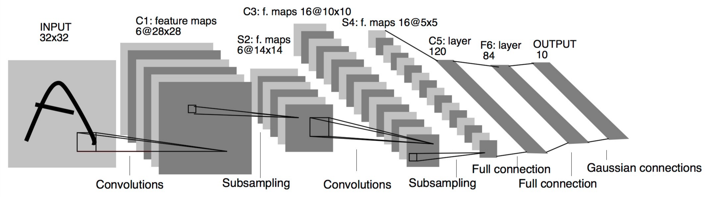
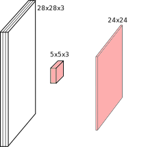
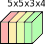
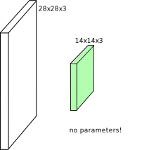
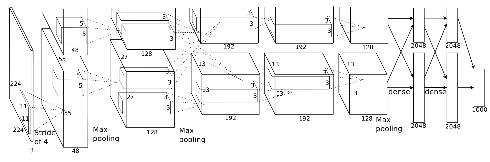
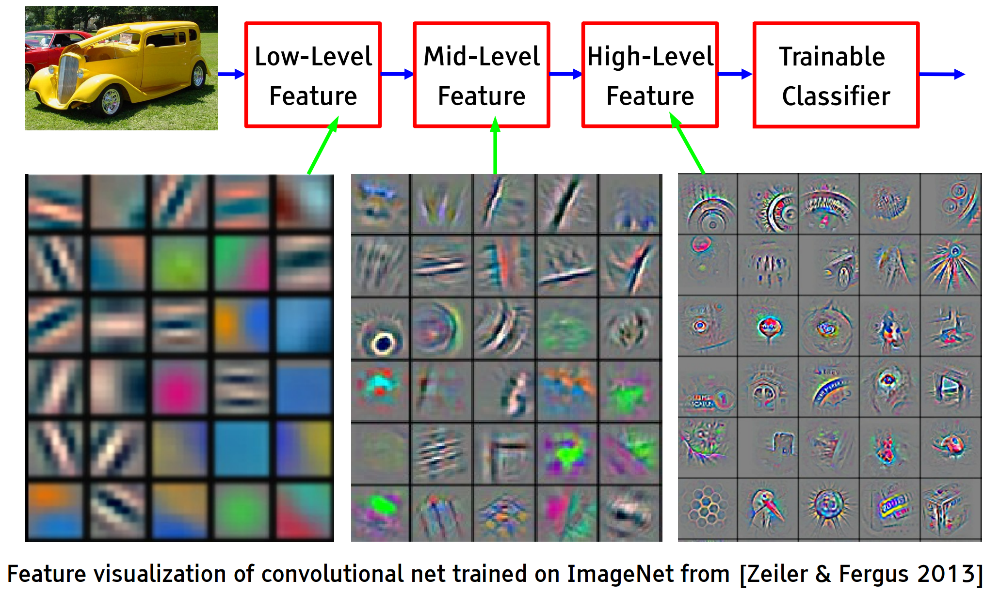
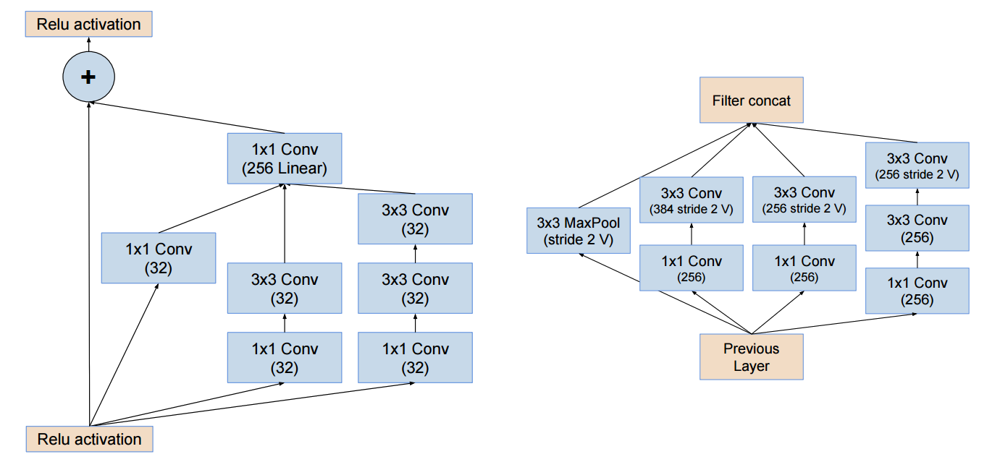
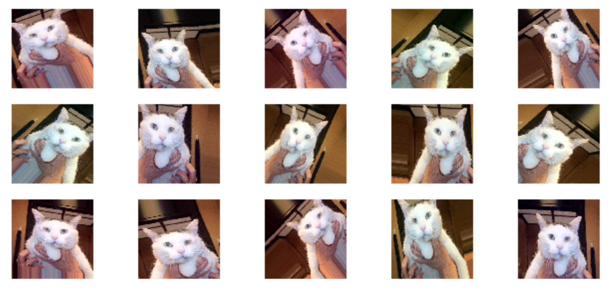

class: center, middle # Convolutional Neural Networks Charles Ollion - Olivier Grisel .affiliations[    ] --- ## Used everywhere for Vision .center[ <img src="images/vision.png" style="width: 600px;" /> ] --- # Many other applications <br/> ### Speech recognition -- ### NLP -- ### Protein/DNA binding prediction -- ### Any problem with a spatial (or sequential) structure --- ## ConvNets for image classification CNN = Convolutional Neural Networks = ConvNet <br/> -- .center[  ] .footnote.small[ LeCun, Y., Bottou, L., Bengio, Y., and Haffner, P. (1998). Gradient-based learning applied to document recognition. ] --- # Outline <br/> ### Convolutions -- ### CNNs for Image Classification -- ### CNN Architectures --- class: middle, center # Convolutions --- # Convolution Discrete convolution (actually cross-correlation) between two functions $f$ and $g$: $$ (f \star g) (x) = \sum\_{a+b=x} f(a) . g(b) = \sum\_{a} f(a) . g(x + a) $$ -- In computer vision, we typically use 2D-convolutions (actually 2D cross-correlation): $$ (f \star g) (x, y) = \sum_n \sum_m f(n, m) . g(x + n, y + m) $$ -- $f$ is a convolution **kernel** applied to the 2-d map $g$ (think image) --- # A convolution on an image - Image: $im$ of dimensions $5 \times 5$ - Kernel: $k$ of dimensions $3 \times 3$ .center[ <img src="images/numerical_no_padding_no_strides.gif" style="width: 360px;" /> ] .footnote.small[ <br/><br/> These slides extensively use convolution visualisation by V. Dumoulin available at https://github.com/vdumoulin/conv_arithmetic ] -- $ (k \star im) (x, y) = \sum\limits\_{n=0}^2 \sum\limits\_{m=0}^2 k(n, m) . im(x + n - 1, y + m - 1) $ ??? This formula actually implements a cross-correlation instead of a true convolution: https://en.wikipedia.org/wiki/Cross-correlation The formula for an actual convolution would be: $ (k \star im) (x, y) = \sum\limits\_{n=0}^2 \sum\limits\_{m=0}^2 k(n, m) . im(x - n + 1, y - m + 1) $ Then the indexing of the kernel components would be done in the opposite direction of the image indexing in that case. In practice, convnets can use either cross-correlations or true convolutions, this does not have any impact on the final function computed by the network as the kernel parameters are initialized randomly and are trained to minimize the loss on the training set in both cases. --- # Kernels as neural networks .center[ <img src="images/numerical_no_padding_no_strides_00.png" style="width: 360px;" /> ] - $x$ is a $3 \times 3$ chunk of the image - Each output neuron is parametrized with the kernel weights $\mathbf{w}$ -- The activation obtained by sliding the $3 \times 3$ window and computing: $$ z(x) = relu(\mathbf{w}^T x + b) $$ --- # Channels Colored image = tensor of shape `(height, width, channels)` -- Convolutions can be computed across channels: .center[  ] -- $$ (k \star im) (x, y) = \sum\limits\_{c=0}^2 \sum\limits\_{n=0}^4 \sum\limits\_{m=0}^4 k(n, m, c) . im(x + n - 2, y + m - 2, c) $$ --- # Multiple convolutions .center[ <img src="images/convmap1.svg" style="width: 400px;" /> ] --- # Multiple convolutions .center[ <img src="images/convmap2.svg" style="width: 400px;" /> ] --- # Multiple convolutions .center[ <img src="images/convmap3.svg" style="width: 400px;" /> ] --- # Multiple convolutions .center[ <img src="images/convmap4.svg" style="width: 400px;" /> ] --- # Multiple convolutions .center[ <img src="images/convmap_dims.svg" style="width: 400px;" /> ] -- - Kernel size aka receptive field (usually 1, 3, 5, 7, 11) - Ouput dimension: `length - kernel_size + 1` --- # Strides - Strides: increment step size for the convolution operator - Reduces the size of the ouput map .center[ <img src="images/no_padding_strides.gif" style="width: 260px;" /> ] .center.small[ Example with kernel size $3 \times 3$ and a stride of $2$ (image in blue) ] --- # Padding - Padding: artifically fill borders of image - Useful to keep spatial dimension constant across filters - Useful with strides and large receptive fields - Usually: fill with 0s .center[ <img src="images/same_padding_no_strides.gif" style="width: 260px;" /> ] --- # Dealing with shapes Kernel shape $(F, F, C^i, C^o)$ .left-column[ - $F \times F$ kernel size, - $C^i$ input channels - $C^o$ output channels ] .right-column[ .center[  ] ] -- .reset-column[ ] Number of parameters: $(F \times F \times C^i + 1) \times C^o$ -- Activation shapes: - Input $(W^i, H^i, C^i)$ - Output $(W^o, H^o, C^o)$ -- $W^o = (W^i - F + 2P) / S + 1$ --- # Pooling - Spatial dimension reduction - Local invariance - No parameters: max or average of 2x2 units -- <br/><br/> .center[ <img src="images/pooling.png" style="width: 560px;" /> ] .footnote.small[ Schematic from Stanford http://cs231n.github.io/convolutional-networks ] --- # Pooling - Spatial dimension reduction - Local invariance - No parameters: max or average of 2x2 units .center[  ] --- # ConvNet ### Input -- ### Conv blocks - Convolution + activation (relu) - Convolution + activation (relu) - ... - Maxpooling 2x2 -- ### Output - Fully connected layers - Softmax --- # Motivations ### Local connectivity - A neuron depends only on a few local neurons - Translation invariance -- ### Comparison to Fully connected - Parameter sharing - Make use of spatial structure -- ### Animal Vision Analogy .small[ Hubel & Wiesel, RECEPTIVE FIELDS OF SINGLE NEURONES IN THE CAT'S STRIATE CORTEX (1959) ] --- class:middle, center # Architectures --- # AlexNet .center[  ] .footnote.small[ Simplified version of Krizhevsky, Alex, Sutskever, and Hinton. "Imagenet classification with deep convolutional neural networks." NIPS 2012 ] -- Input: 227x227x3 image First conv layer: kernel 11x11x3x96 stride 4 -- - Kernel shape: `(11,11,3,96)` - Output shape: `(55,55,96)` - Number of parameters: `34,944` - Equivalent MLP parameters: `43.7 x 1e9` --- # AlexNet .center[ ] ```md INPUT: [227x227x3] CONV1: [55x55x96] 96 11x11 filters at stride 4, pad 0 MAX POOL1: [27x27x96] 3x3 filters at stride 2 CONV2: [27x27x256] 256 5x5 filters at stride 1, pad 2 MAX POOL2: [13x13x256] 3x3 filters at stride 2 CONV3: [13x13x384] 384 3x3 filters at stride 1, pad 1 CONV4: [13x13x384] 384 3x3 filters at stride 1, pad 1 CONV5: [13x13x256] 256 3x3 filters at stride 1, pad 1 MAX POOL3: [6x6x256] 3x3 filters at stride 2 FC6: [4096] 4096 neurons FC7: [4096] 4096 neurons FC8: [1000] 1000 neurons (softmax logits) ``` --- # Hierarchical representation .center[  ] --- # VGG-16 .center[ <img src="images/vgg.png" style="width: 600px;" /> ] .footnote.small[ Simonyan, Karen, and Zisserman. "Very deep convolutional networks for large-scale image recognition." (2014) ] --- # Memory and Parameters ```md Activation maps Parameters INPUT: [224x224x3] = 150K 0 CONV3-64: [224x224x64] = 3.2M (3x3x3)x64 = 1,728 CONV3-64: [224x224x64] = 3.2M (3x3x64)x64 = 36,864 POOL2: [112x112x64] = 800K 0 CONV3-128: [112x112x128] = 1.6M (3x3x64)x128 = 73,728 CONV3-128: [112x112x128] = 1.6M (3x3x128)x128 = 147,456 POOL2: [56x56x128] = 400K 0 CONV3-256: [56x56x256] = 800K (3x3x128)x256 = 294,912 CONV3-256: [56x56x256] = 800K (3x3x256)x256 = 589,824 CONV3-256: [56x56x256] = 800K (3x3x256)x256 = 589,824 POOL2: [28x28x256] = 200K 0 CONV3-512: [28x28x512] = 400K (3x3x256)x512 = 1,179,648 CONV3-512: [28x28x512] = 400K (3x3x512)x512 = 2,359,296 CONV3-512: [28x28x512] = 400K (3x3x512)x512 = 2,359,296 POOL2: [14x14x512] = 100K 0 CONV3-512: [14x14x512] = 100K (3x3x512)x512 = 2,359,296 CONV3-512: [14x14x512] = 100K (3x3x512)x512 = 2,359,296 CONV3-512: [14x14x512] = 100K (3x3x512)x512 = 2,359,296 POOL2: [7x7x512] = 25K 0 FC: [1x1x4096] = 4096 7x7x512x4096 = 102,760,448 FC: [1x1x4096] = 4096 4096x4096 = 16,777,216 FC: [1x1x1000] = 1000 4096x1000 = 4,096,000 TOTAL activations: 24M x 4 bytes ~= 93MB / image (x2 for backward) TOTAL parameters: 138M x 4 bytes ~= 552MB (x2 for plain SGD, x4 for Adam) ``` --- # Memory and Parameters ```md Activation maps Parameters INPUT: [224x224x3] = 150K 0 *CONV3-64: [224x224x64] = 3.2M (3x3x3)x64 = 1,728 *CONV3-64: [224x224x64] = 3.2M (3x3x64)x64 = 36,864 POOL2: [112x112x64] = 800K 0 CONV3-128: [112x112x128] = 1.6M (3x3x64)x128 = 73,728 CONV3-128: [112x112x128] = 1.6M (3x3x128)x128 = 147,456 POOL2: [56x56x128] = 400K 0 CONV3-256: [56x56x256] = 800K (3x3x128)x256 = 294,912 CONV3-256: [56x56x256] = 800K (3x3x256)x256 = 589,824 CONV3-256: [56x56x256] = 800K (3x3x256)x256 = 589,824 POOL2: [28x28x256] = 200K 0 CONV3-512: [28x28x512] = 400K (3x3x256)x512 = 1,179,648 CONV3-512: [28x28x512] = 400K (3x3x512)x512 = 2,359,296 CONV3-512: [28x28x512] = 400K (3x3x512)x512 = 2,359,296 POOL2: [14x14x512] = 100K 0 CONV3-512: [14x14x512] = 100K (3x3x512)x512 = 2,359,296 CONV3-512: [14x14x512] = 100K (3x3x512)x512 = 2,359,296 CONV3-512: [14x14x512] = 100K (3x3x512)x512 = 2,359,296 POOL2: [7x7x512] = 25K 0 *FC: [1x1x4096] = 4096 7x7x512x4096 = 102,760,448 FC: [1x1x4096] = 4096 4096x4096 = 16,777,216 FC: [1x1x1000] = 1000 4096x1000 = 4,096,000 TOTAL activations: 24M x 4 bytes ~= 93MB / image (x2 for backward) TOTAL parameters: 138M x 4 bytes ~= 552MB (x2 for plain SGD, x4 for Adam) ``` --- .left-column[ # ResNet ] .footnote.small[ .left-column[ He, Kaiming, et al. "Deep residual learning for image recognition." CVPR. 2016. ] ] .right-column[ .center[ <img src="images/resnet.png" style="width: 290px;" /> ] ] Even deeper models: 34, 50, 101, 152 layers --- .left-column[ # ResNet ] .footnote.small[ .left-column[ He, Kaiming, et al. "Deep residual learning for image recognition." CVPR. 2016. ] ] .right-column[ .center[ <img src="images/resnet.png" style="width: 290px;" /> ] ] A block learns the residual w.r.t. identity .center[ <img src="images/residualblock.png" style="width: 290px;" /> ] -- - Good optimization properties --- .left-column[ # ResNet ] .footnote.small[ .left-column[ He, Kaiming, et al. "Deep residual learning for image recognition." CVPR. 2016. ] ] .right-column[ .center[ <img src="images/resnet.png" style="width: 290px;" /> ] ] ResNet50 Compared to VGG: #### Superior accuracy in all vision tasks <br/>**5.25%** top-5 error vs 7.1% -- #### Less parameters <br/>**25M** vs 138M -- #### Computational complexity <br/>**3.8B Flops** vs 15.3B Flops -- #### Fully Convolutional until the last layer --- # Deeper is better .center[ <img src="images/deeper.png" style="width: 660px;" /> ] .footnote.small[ from Kaiming He slides "Deep residual learning for image recognition." ICML. 2016. ] --- # Inception-V4 / -ResNet-V2 Deep, modular and state-of-the-art</br> Achieves **3.1% top-5** classification error on imagenet .center[ <img src="images/inception1.png" style="width: 480px;" /> ] .footnote.small[ Szegedy, et al. "Inception-v4, inception-resnet and the impact of residual connections on learning." (2016) ] --- # Inception-V4 / -ResNet-V2 More building blocks engineering... .center[  ] .footnote.small[ Szegedy, et al. "Inception-v4, inception-resnet and the impact of residual connections on learning." (2016) ] -- - Active area or research - See also DenseNets, Wide ResNets, Fractal ResNets, ResNeXts, Pyramidal ResNets... --- # Comparison of models #### Top 1-accuracy, performance and size on ImageNet .center[ <img src="images/architectures.png" style="width: 760px;" /> ] .footnote.small[ Canziani, Paszke, and Culurciello. "An Analysis of Deep Neural Network Models for Practical Applications." (May 2016). ] --- class: middle, center # Pre-trained models --- # Pre-trained models Training a model on ImageNet from scratch takes **days to weeks**. -- Many models trained on ImageNet and their weights are publicly available! -- ### Transfer learning - Use pre-trained weights, remove last layers to compute representations of images - Train a classification model from these features on a new classification task - The network is used as a generic feature extractor - Better than handcrafted feature extraction on natural images --- # Pre-trained models Training a model on ImageNet from scratch takes **days or weeks**. Many models trained on ImageNet and their weights are publicly available! ### Fine-tuning #### Retraining the (some) parameters of the network (given enough data) -- - Truncate the last layer(s) of the pre-trained network - Freeze the remaining layers weights - Add a (linear) classifier on top and train it for a few epochs -- - Then fine-tune the whole network or the few deepest layers - Use a smaller learning rate when fine tuning --- # Data Augmentation .center[ <img src="images/not-augmented-cat.png" style="width: 180px" /> ] -- .center[  ] ??? - Use prior knowledge on label-invariant transformation - A rotated picture of a cat is still a picture of a cat. - Effective way to reduce overfitting on small labeled sets. - No silver bullet: transfer learning often more effective for natural images. --- # Data Augmentation With Keras: ```python from keras.preprocessing.image import ImageDataGenerator image_gen = ImageDataGenerator( rescale=1. / 255, rotation_range=40, width_shift_range=0.2, height_shift_range=0.2, shear_range=0.2, zoom_range=0.2, horizontal_flip=True, channel_shift_range=9, fill_mode='nearest' ) train_flow = image_gen.flow_from_directory(train_folder) model.fit_generator(train_flow, train_flow.nb_sample) ``` --- class: middle, center # Lab 3: Room F503 and F900 in 15min!